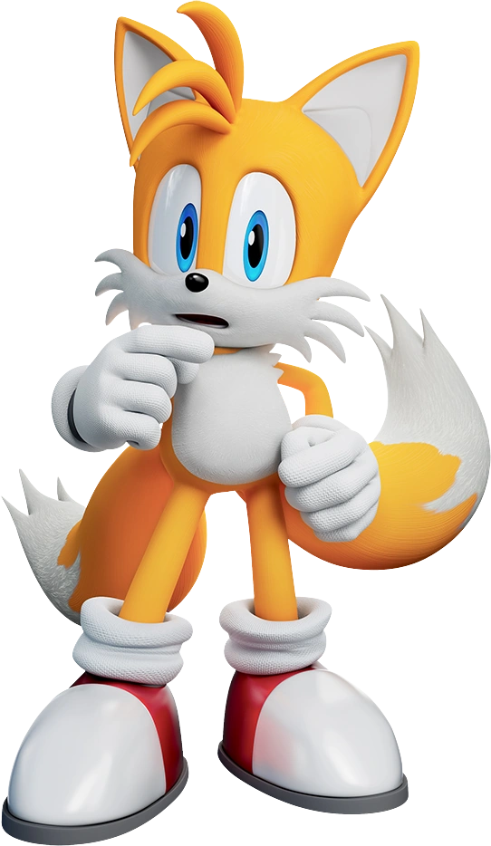

Sonic Characters

Sonic the Hedgehog, letteralmente Sonic il riccio, è un personaggio immaginario, colone di
Mario,
protagonista della serie videoludica nipponica Sonic.
Il suo nome deriva dalla parola inglese "sonico": infatti è un riccio blu con la capacità di
superare la velocità del suono, ma non solo, la sua velocità nei vari giochi ha superato la
velocità
della luce contro un buco nero potenziato. Molti personaggi confermano più volte che la sua
velocità
sia immisurabile. Sonic the Hedgehog è il protagonista dell'omonima serie di videogiochi,
sviluppata
principalmente da Sonic Team; è stato introdotto per la prima volta in Rad Mobile sotto forma di
cameo, e di seguito apparve in Sonic the Hedgehog per il Sega Mega Drive il 23 giugno 1991
come protagonista giocabile. Da allora il personaggio è apparso in numerosi videogiochi e media
correlati, inclusi fumetti, serie animate e film.

Knuckles the Echidna è un personaggio appartenente alla serie di
videogiochi a piattaforme Sonic. È un'echidna mobian rosso, ultimo sopravvissuto della sua tribù, che
funge da guardiano del Master Emerald, un enorme smeraldo in grado di tenere sotto controllo il potere
degli smeraldi del Caos (oggetti ricorrenti della serie). È nativo di Angel Island, un'isola che fluttua
nel cielo grazie al potere dello smeraldo.
Venne introdotto per la prima volta dalla SEGA come antagonista in Sonic the Hedgehog 3, in cui il Dr.
Eggman lo ingannò per metterlo contro Sonic e Tails. È poi riapparso come personaggio giocabile in Sonic
and Knuckles, inizialmente ancora come rivale di Sonic, ma dopo aver appreso l'inganno di Eggman si alleò
con lui, divenendo alla fine uno dei suoi migliori amici.

Miles Prower, più noto come Tails (chiamato Scheggia nell'adattamento italiano delle serie
animate Sonic e Sonic the Hedgehog SatAM), è un personaggio
immaginario appartenente alla serie di videogiochi a piattaforme Sonic. È una volpe mobian maschio
gialla a due code. Il suo vero nome è Miles Prower, che in lingua inglese è un gioco di parole, in
quanto nel momento in cui viene pronunciato, risulta avere lo stesso suono dell'espressione "miles per
hour", in italiano miglia orarie. Il suo soprannome, Tails, è la parola inglese il cui significato è
"code", e allude alla duplice coda del personaggio. Il suo aspetto fisico si basa sulle leggende
giapponesi delle kitsune, mitici demoni dall'aspetto di volpi a più code.
Shadow the Hedgehog è un personaggio immaginario primario
appartenente alla serie di videogiochi a piattaforme Sonic, introdotto per la prima volta nel 2001 in
Sonic Adventure 2 per Sega Dreamcast. È inizialmente apparso come grande rivale di
Sonic; successivamente rimarrà un personaggio neutrale e dal carattere chiuso, ma nonostante ciò
aiuterà Sonic e i suoi amici quando ne avranno bisogno.
Shadow è un riccio mobian nero e immortale, creato 50 anni prima degli eventi principali della serie dal
professor Gerald Robotnik (nonno dell’antagonista Dr. Eggman) sfruttando il sangue del malvagio alieno
Black Doom. Dopo aver assistito all'omicidio della sua migliore amica Maria, nipote di Gerald, Shadow
cercherà di distruggere la Terra, missione affidatagli dal professore come vendetta contro l'umanità.